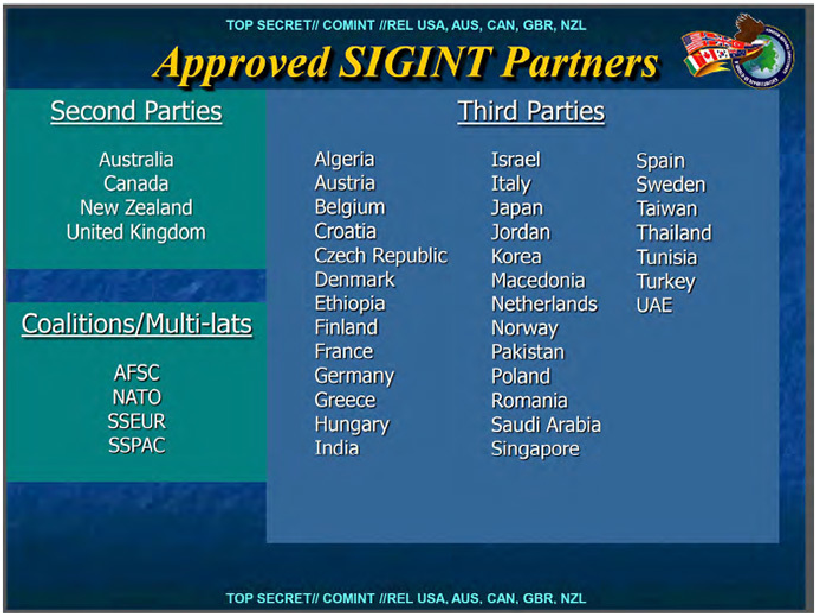
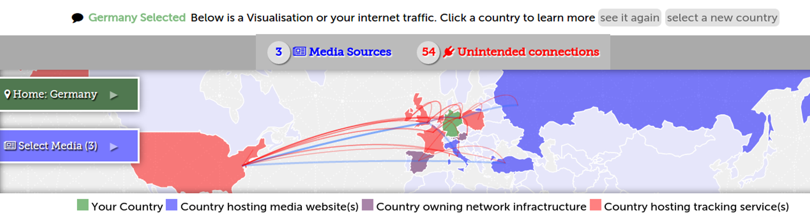

Trackography
Mapping the Internet's Original Sin
press ESC to display slide tree
Online tracking
“When governments collect data we call it surveillance, but when companies do the same, we mistakenly call it user services”Marek Tuszynski.
Why did we develop Trackography?
- We are interested in the online tracking business because it is pretty opaque
- We have seen through the Snowden revelations that intelligence agencies have tapped into the data collected by tracking companies
- We do not control the profiles created about us by online tracking companies - which can lead to abuse
- This is a resource for research, advocacy and transparency
Why are we focusing on media websites?
- One of the most common things we do is read the news online
- The business model of the media is largely dependent on advertising
- The type of news we read show more about us in the long-term than what we think
- A Facebook experiment shows that what we read influences our behaviour
Developing a Script to Track the Trackers
Our script is designed to:
- Perform an HTTP connection (using phantomjs) to every media website under analysis
- Collect all the third party URLs which are included in the media websites under analysis
- Perform a traceroute for every URL included in the media websites under analysis
- Identify the countries which host the network infrastructure and perform a GeoIP conversion of all the included IP addresses in the network path
But the script does NOT work in conjunction with your browser - it just performs a connection to the media and sends us the results
What does Trackography show when we select websites?
- The blue countries host the servers of the websites you have selected
- The purple countries host the network infrastructure required to access the websites you have selected
- The red countries host the servers of the companies that track you when you access the websites you have selected
As for the arcs?
- The blue arcs show your connection to the websites you have selected
- ...while the red arcs show your connection to tracking companies
User Vulnerability: Network Topology
- When we access websites, our connections travel through the network infrastructure of foreign states
- When unencrypted connections pass though the network infrastructure of ISPs, they have access to the HTTP referer, cookies, and other identifiable information
- When unencrypted connections pass though the network infrastructure of ISPs, they can redirect traffic to malicious servers
Tapping fibre-optic cables
 And check Ingrid Burrington interactive map!Do you remember FoxAcid ?

Or FinFly ISP?
They are based on the interception of HTTP connections which are redirected to other servers and subsequently injected with a browser exploit or tampered with a download on-the-fly
Geopolitics of data
Through which websites are we tracked the most?
Not so easy to say!
Tracking changes across time, but more importantly, it changes depending on the location of the client!
User Vulnerability: Profiling
When we access webpages, third parties track us and create profiles about us - which may or may not be accurate
How was Berlin's digital rights community tracked in January 2015?
- We created a new list of webpages
- Such webpages were published in January 2015
- Such webpages were tweeted a lot by Berlin's digital rights community in January 2015
- We ran our script based on these websites to identify third party trackers
How was Berlin's digital rights community tracked in January 2015?
we've looked in pages talking about...Surveillance
Censorship
Cyber security
Call for expansion of surveillance powers following the Charlie Hebdo attack
International responses to the Charlie Hebdo attack
Spain's criminalisation of the right to privacy
Google handing over WikiLeaks data to the U.S.
Convictions, whistleblower awards, Tor and privacy
Third party trackers
 Access the Trackography January-Digital-Rights-Community mapEFF, an example of a website that does NOT enable online tracking
EFF page.and which uses https for every inclusion.
Trackers' Business Model
Third party trackers (a.k.a tracking companies) engage in (one or more of) the following:
- Advertising
- Profiling
- Market Research
- Web Analytics
- Web Crawling
"Our policy is to tell people about government requests for their data, except in limited cases, like when we are gagged by a court order, which sadly happens quite frequently" - Google spokesperson
But how do the Trackers handle our data?
We collected the following fields of data from the privacy policies of some of the globally prevailing tracking companies:
- The types of data they collect
- Whether they provide safeguards to prevent the full identification of users' IP addresses
- Whether users can opt-out from their tracking
- Whether they support Do Not Track (DNT)
- The types of tracking technologies they use
- Whether they comply with the US – EU Safe Harbour Framework
- Whether they are TRUSTe certified
Opt-Out ?
Largely conditional because in some cases:
- Users can only opt-out if their browser is not configured to block third party cookies
- Users can only opt-out by cancelling their account with a service
- Users need to opt-out from every device that they use
- Users can only opt-out from the browser that they are using
- If users opt-out they will have restricted access to content, features and services
- ...and lets not forget the various default online tracking settings browsers have...
Globally prevailing tracking companies
- 19 out of 25 state that they collect personally identifiable information
- Only 3 out of 25 support Do Not track (DNT)
- Only 11 out of 25 disclose how long they retain data for
Trackography API

How can we block and circumvent online tracking?
| Types of tools | Tools for Firefox | Tools for Chrome |
| Blocks third party trackers | Privacy Badger, AdBlock Plus, Ghostery and Disconnect | Adblock Plus, Ghostery and Disconnect |
| Blocks third party scripts | NoScript | ScriptNo |
| Blocks cross-site tracking | RequestPolicy and Priv8 | |
| Sets opt-out cookies | Beef Taco | |
| Clears your browsing history | Click&Clean | Click&Clean |
| Visualises third party trackers | Ghostery and Disconnect | Ghostery and Disconnect |
Help us Track the Trackers
Is your country missing from Trackography?
Contribute by helping us create or review your country's media list and please pull request.
When the media list is ready, run the data collection script
wget https://github.com/vecna/trackmap/blob/master/setup.sh && sh ./setup.sh
cd trackmap
./perform_analysis.py -c NAME_OF_YOUR_COUNTRY
Thanks! Questions?
pub 3200R/0x94E7EF47 2014-08-05 [expires: 2015-08-30]
Key fingerprint = ABC2 7639 5EE3 3245 A0A1 3973 40E2 6C25 94E7 EF47
uid TrackMap project <trackmap@tacticaltech.org>
sub 3200R/0x504DEBDF 2014-08-05 [expires: 2015-08-30]
Trackography twitter @trackography_
Access Trackography through Tactical Tech's Me & My Shadow